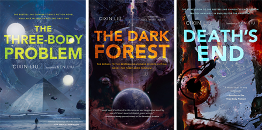

The Three Body Problem (Remembrance of Earth's Past)
Friday January 24, 2020
Liu Cixin's popular trilogy is a problematic page-turner. It's hard sci-fi fascinated with society but culturally backward and exceptionally pessimistic. It's kind of fun to play what-if with the author, but these books feel like artifacts of a bad old world.

The main concept of the books' universe is that there's tons of intelligent life, but life always decides to preemptively annihilate any other life it can find, and therefore also to hide. This Dark Forest idea resolves the Fermi paradox. Stephen Hawking even co-signs.
Annihilation is typically done by wrecking stars, but also sometimes by locally reducing the number of spatial dimensions. The universe is 11-dimensional, but war has effectively reduced it to 3D, and most humans get killed when the solar system is reduced to 2D.
There's a surprising amount of smoking. Two hundred years in the future, the big advance is that cigarettes are self-lighting. Bad communication between a father and son is held up as somehow noble. The character Fraisse is arguably a Magical Negro.
The books have a problematic relationship with women. The trilogy opens with a wife betraying her husband as he's murdered by young girls in a public display. This couple's daughter goes on to invite aliens to conquer Earth, like Eve with a backstory.
We meet the protagonist of book two while he's trying to remember the name of the woman he just slept with. She's immediately killed by an assassination attempt meant for him. This important man falls in love with an imaginary woman, until later he describes her and has people go find a real woman like his imaginary lover, who is brought to live with him and then marries him and bears him a child.
An initially competent woman is introduced in the third book. She goes on to allow aliens to conquer Earth because of her "maternal instinct," and then yet again to doom the Earth further because she wouldn't let a man do what he wanted.
"Twice, she had been placed in a position of authority second only to God, and both times she had pushed the world into the abyss in the name of love." (Death's End, page 641)
The books are deeply pessimistic. There's a lot of suicide, including humanity-wide:
"The most surprising aspect of the Earth-Trisolaris Movement was that so many people had abandoned all hope in human civilization, hated and were willing to betray their own species, and even cherished as their highest ideal the elimination of the entire human race, including themselves and their children." (The Three Body Problem, page 317)
(There actually is a Voluntary Human Extinction Movement. It is not very popular.)
When people do want to keep living they very quickly turn on one another. The zero-sum nature of the universe is an axiom of these books. A little bit of fun comes out of the explorations of deception in the face of full-information competition, but it's a sad world.
The first book teases that it might explore fun ideas around foundations or philosophy, but there's no real payoff to these plot directions. It feels like something from an earlier draft that never got edited out.
The first book is a long introduction to the trilogy. The backdrop of the Cultural Revolution is interesting for the unfamiliar, but what I most enjoyed hearing from Liu was his sci-fi speculation, and that really only gets rolling in book two.
I like science and all, but I didn't need all the pro-STEM pandering, much less the anti-environmentalism. (Silent Spring helps inspire a desire to kill all humans, for example.)
I liked Ken Liu's translation of the first and third books, and his brief notes. He says that translation shouldn't read as if it was originally written in the target language, which I thought was interesting. The second book's translator may have taken Ken's advice too far, stilting the dialogue and having people refer to one another as "doctor" far too much.
The Remembrance of Earth's Past is unique to me in that while I found it engrossing, I can't really recommend it. Read The Broken Earth instead.
"The era for humanity's degenerate freedom is over. If you want to survive here, you must relearn collectivism and retrieve the dignity of your race!" (Death's End, page 235)